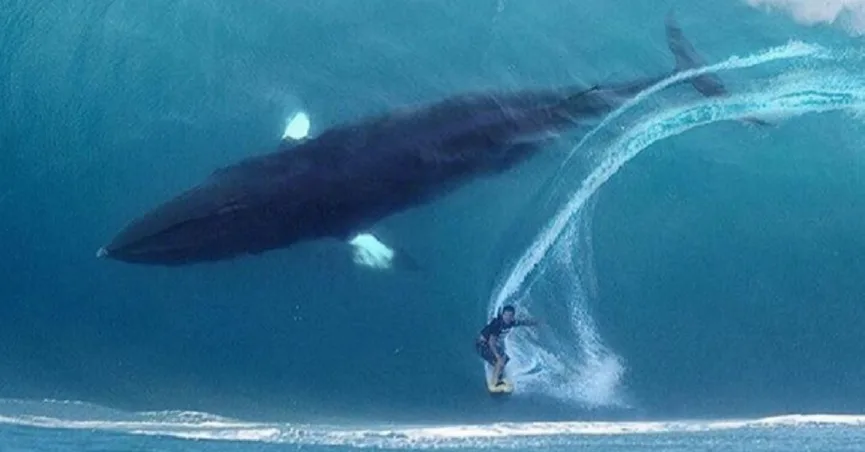

Gustavo de Borja Borges

Solucoes com tecnologia!
Em que posso ajudar?
Contato
Telefone: (48) 9 9621-3107
E-mail: gustavoborges98@hotmail.com
Rua Deputado Antônio Edu Vieira, 1400. Florianópolis – SC
Formação
★ Bacharel em Administração Pública – ESAG – UDESC – 2018;
★ Cursando 3ª fase de Análise e Desenvolvimento de Sistemas – SENAC SC.
Experiências Profissionais
- UNISOCIESC
- Suporte de TI;
- Gestão de máquinas e equipamentos;
- Manutenção das máquinas do campus;
- Formatação;
- Gerenciamento de unidades de rede;
- Instalação e configuração de impressoras;
Experiências anteriores:
- Secretaria De Turismo, Esporte e Cultura de Estado de SC (SOL). - 05/2017 à 07/2018.
- Estagiário;
- Suporte geral para os setores.
- Secretaria Municipal de Desenvolvimento Urbano e Meio Ambiente (SMDU) – Prefeitura de Florianópolis. - 05/2015 à 12/2016.
- Ouvidor Público
- Atendimento ao cidadão;
- Gestão das ouvidorias no Sistema da Prefeitura;
- Controle das ouvidorias na Secretaria.
- Programa ESAG COMUNIDADE - UDESC. - 02/2014 à 05/2015.
- Bolsista de Extensão;
- Acompanhamento das Organizações do Terceiro Setor;
- Suporte a Professora coordenadora do projeto na Institucionalização das ONGs.
Qualificações e Atividades Complementares
- Relacionadas a Desenvolvimento:
- Desenvolvimento Orientado a Objeto em Java;
- Desenvolvimento e gerenciamento de Banco de Dados em MYSQL;
- Conhecimento em Html5, CSS, JavaScript, Node e React;
- Conhecimento básico em Python;
- Ótima lógica de programação.
-
Conheça meu GitHub!
- Relacionadas a outras atividades:
- Inglês – Leitura: intermediária/fluente | conversação: intermediária – 3 anos de curso no CCAA;
- Domínio de softwares Microsoft Office (Word e Excel);
- Domínio de softwares para elaboração de organogramas, fluxogramas e mapas mentais (Bizagi e Xmind);
- Domínio de softwares de tratamento de imagens e edição de vídeos (CorelDraw, Photoshop, Adobe Premier, PowToon e Windows Movie Maker);
- Curso de Aperfeiçoamento em Ilustração e Tratamento de Imagens – SENAC;
- Curso de Extensão em Desenvolvimento Institucional – ESAG – 104 horas;
Sobre
Influências:
